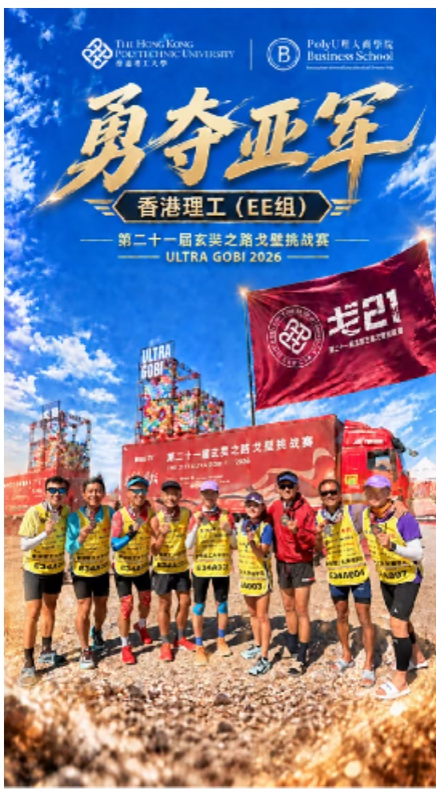

The 21st Xuanzang Road Gobi Challenge
The dust of Go21 has finally settled. Months of focused preparation and four days of extreme racing across 121 kilometres have become a permanent memory. Looking back on this once-in-a-lifetime run with the A Team, my heart is still racing.
People imagine that a great journey must be filled with dramatic stories. Only after crossing this desert did I realise how quickly those four days and three nights passed. There was no time to savour them before they became our own legend.
It all began at an ordinary gathering late last year. Through my old mountaineering friend Lao Pang, I met a group of exceptional runners and trail athletes. Team leader Yu asked me directly: “Would you like to run the Gobi Challenge?” The passion inside me was instantly lit. I agreed without hesitation. A marathon was already familiar territory, but four consecutive days and 121 kilometres through a harsh desert would be an entirely new test.
Preparation
In March we began our group training camp in humid Hong Kong. I met our resilient captain Albert, far-sighted Professor Liang and teammate Xiaomai, who later had to withdraw through injury. We ran hard on the road on the first day and climbed the MacLehose Trail on the second. Everyone was full of energy.
From then on, we trained in deliberately demanding blocks designed to copy the rhythm of the race. Every two to three weeks I completed four consecutive days and more than 100 kilometres, forcing the body to produce again before it had fully recovered. My fitness improved sharply; in the first seven months of 2026 my average monthly distance reached 450 kilometres.
Injuries fought back. Early in June, two kilometres from the finish of our first desert reconnaissance, my iliotibial band felt like a needle. An emergency massage from Shutang helped me continue. The next day a sandstorm forced the 33-kilometre stage to stop at 26 kilometres. On the third day, I fought a strong crosswind until my legs failed before a valley and I had to take the vehicle. The lesson was clear: run too little and aerobic endurance suffers; run too much and injury returns.
In mid-July we completed more than 70 kilometres of mountain roads in three days in Guiyang, finishing strongly despite sore knees. In August I travelled to Africa and ran four marathons in four countries over six days, coping with severe temperature changes, 1,600 metres of elevation difference and constant travel. My IT band held up and gave me renewed confidence.
Then came another test. On 6 September I ran the Shenyang Half Marathon with my wife. Knee pain returned two kilometres from the finish. A week later at the Harbin Marathon it appeared at 18 kilometres and became agonising at 26, one of the hardest battles in more than 40 marathons. With only two weeks left before Go21, I could not help feeling anxious.

Experience day: 27 km
Experience-day times did not count towards the overall result, but my desire to race was impossible to contain. The start was crowded and the first two kilometres were slow. Once I broke clear after four kilometres, I raised the pace and kept my heart rate at 140. Hearing teammates over the radio, some ahead and some behind, told me everyone was saving energy.
I kept passing runners until there was nobody ahead of me after 20 kilometres. At 22 kilometres a bearded international runner came past and then followed my line. Three kilometres later he dropped away. In the final kilometre a volunteer shouted that four runners were still ahead. I emptied the tank, finished fifth overall and first in the EE group.
In a field where everyone else was holding back, I took the lead for the team and earned the first major first-place result of my running life.
Stage one: 33 km

Based on the previous year's result, we started second-to-last among six strong EE teams. By the time the gun went at around 09:05, the desert was already heating up. I followed the planned 5:30 pace, but when my heart rate passed 150 I dropped to 5:45 and fixed my eyes on Albert and Tao ahead.
For 20 lonely kilometres, my teammates' voices over the radio were my strongest support. At 20 kilometres I passed the slower group that had started ahead. Through the compulsory check point and the climb that followed, I caught Tao and Albert, who had both fought through cramps.
We eased down for the last five kilometres and arrived safely together in 3:14. We had locked in second place in the EE category: more than 17 minutes behind the leaders but just over two minutes ahead of third. There was still no room for error.
Stage two: 34 km
We started only 30 seconds behind the leaders. We cut the first corner together, joined the leading group after one kilometre and erased the gap immediately. Our rivals accelerated and the team responded. I had slept badly in my tent and my legs felt heavy. The fear of letting the team down made me extremely anxious.
After 10 kilometres I came back to life. At the 15-kilometre checkpoint I caught Professor Yang, Jianzhong and Tao, all running strongly. I left the checkpoint before the required five minutes were up and pushed alone through the brutal 16-to-26-kilometre climb, passing several EMBA A-team runners.
On the final seven kilometres, under the full sun on a rough, washboard road, the radio brought startling news: Jianzhong, who was much heavier than me, was only 700 metres behind. Albert was less than 500 metres ahead.
My stubbornness took over. With three kilometres left I threw away every bottle and gel, stripped back every burden and launched an all-out chase. I saw Albert, closed on him and passed him in the final kilometre, finishing in 3:32.
That day the whole team produced something extraordinary. Jianzhong, Professor Yang, Frank, Tao, Yuanguang and our sole female warrior Sisi all gave everything. We opened a 17-minute gap on third place and laid a steel foundation for the overall result.


Stage three: 27 km
On the night before the final stage, Huanggu Yi had its first heavy rain in Go21 history. Under a brilliant sky after the storm, the team was ready. When the gun went, we chased the dream without hesitation. I led us along a shortcut by memory and followed two strong figures into the sunrise, assuming they were the leaders.
After a 14-kilometre pursuit I caught them and discovered they were Tao and Frank. The misjudgement disrupted our rhythm. Albert was out of sight and the radio went silent.
I gritted my teeth and attacked again, racing all the way to the valley at 21 kilometres. On the final four kilometres I crossed an icy river and climbed through a dense field of runners on exhausted legs. When the radio confirmed that Albert had already finished, I felt a moment of panic. Then I saw every team around me accelerating and found another gear, sprinting across the line.
Our teammates were waiting with open arms. The tears came without warning. We had held off the chasing teams and brought the EE runner-up trophy home to PolyU, a moment of pride for every member of the PolyU community.
After the race
This remarkable victory was never the work of one person. Without the team's total commitment, the result would have been impossible.
Team leader Yu: Without him there would have been no PolyU Go21 team. He built the squad from a difficult starting point, found people, prepared supplies for every training session and was always there to hand us water and shout encouragement. During camps we shared a room, yet he would work late and still lead the next morning. His selflessness was the foundation of the team.
Coach Guohui: Our tactical brain. He built a professional, scientific training plan for the desert. He sprained his ankle at the first Hong Kong camp but still accompanied us through Guiyang, Shenzhen and the Gobi, taking care of every detail.
Sister Chang: Our emotional centre. She slept only a few hours before meeting us in Hong Kong, shared hard-won experience at the send-off and remembered every teammate's name. During the race she monitored us on the radio, timed every water and food handover at the checkpoints, and reviewed the day afterwards. She even rented an electric bike to accompany our morning run near Leiyin Temple.
Master Xiaojing: Our recovery specialist. He identified risks, taught us hip-opening exercises, applied kinesiology tape before each stage and worked on our tired muscles afterwards. His hands protected the team, and my IT band survived four hard days without pain.
Xiaoyu: The force behind the camp. She kept working despite being unwell. Each morning she prepared hot water, moved ahead with the next station and made a simple desert tent feel warm with noodles, beef, tea and snacks. She turned a harsh desert into a safe harbour.
Teammates and support
My teammates: Albert, Tao, Professor Liang, Professor Yang, Frank, Jianzhong, Yuanguang and Sisi. Some were old friends from training camps and some were new. The moment we stepped onto the course, we became a team bound by blood and sweat. To the resilient members of the B and C teams, thank you for the strength you brought. I hope to see you in the A Team colours, adding another chapter for PolyU.
Senior Jiang Ming (A+): You crossed 121 kilometres of Gobi alone in one continuous effort. Your example became a light for everyone on our team.
Everyone behind us: To the many members of the PolyU community who could not be in the desert, your messages, cheers and donations were our strongest rear guard. We will never forget that support.

Reflection
Life does not always require us to surpass something. What matters is that we do it.
The long and brutal course gave me an unexpected kind of clarity. For years we have talked about challenging and surpassing ourselves. After crossing this desert, I understood that we do not have to keep overtaking something. To stand on the ground, give everything and “do it” is already heroic.
The course taught another unforgettable lesson: when it hurts, hold on a little longer.
The road may be dangerous and every step painful, but when the whole team stays connected and keeps moving, we can pass through the dark. When the moment of victory finally arrives, all the hardship and sweat acquire a meaning that lights up the years.
Looking back, I believe even more strongly that a dream matters not only for the glory at the finish line. It also gives us the responsibility and courage to set out for one another and fight side by side.
We do not need perfect lives or constant self-transcendence. If the team holds a shared thought and dares to move forward, one more step will eventually be enough. One day, a dream that once seemed impossibly distant will break into reality through sustained effort and sweat.


Life does not always require us to surpass something. What matters is that we do it.
Go21 in pictures
Select any photograph to view the original. Use the arrow keys to move between images.